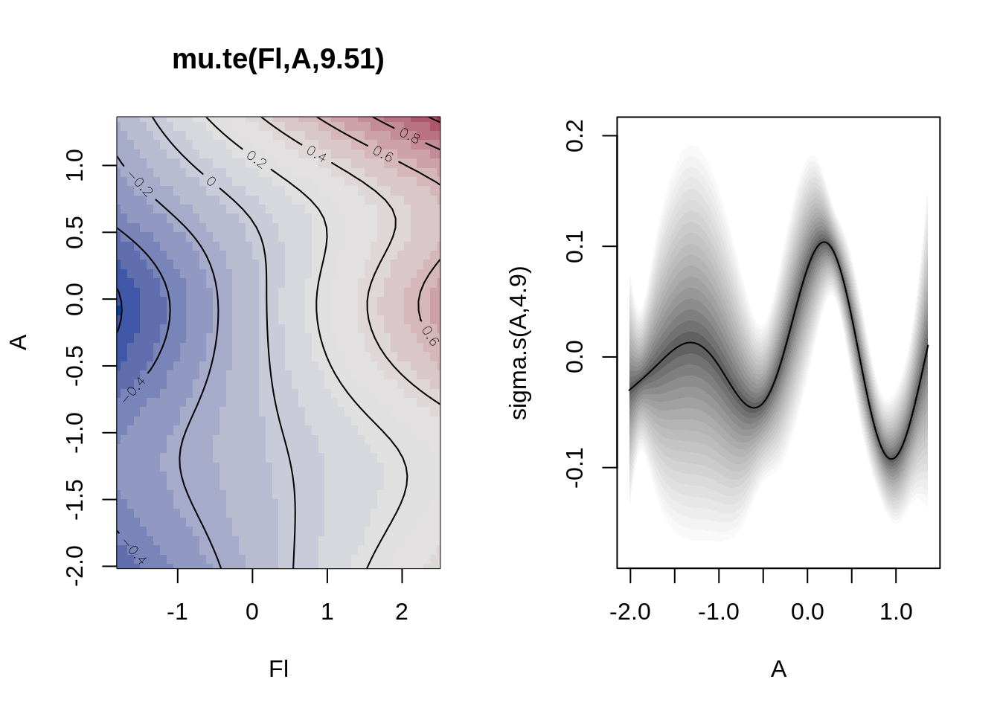
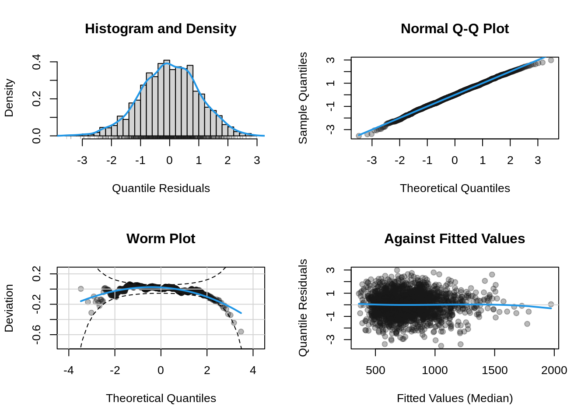
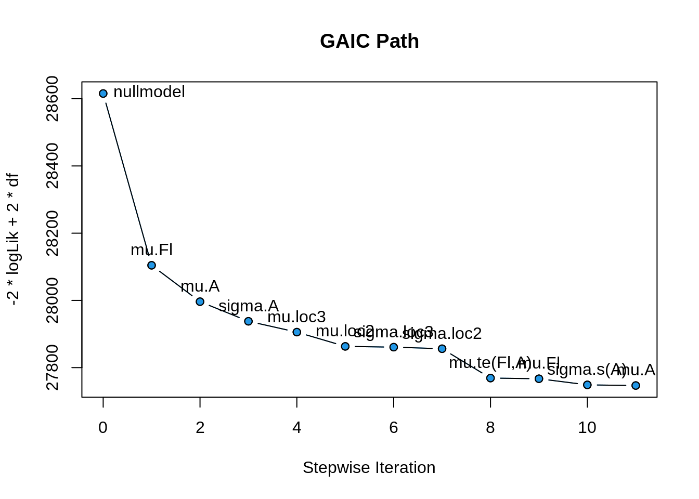
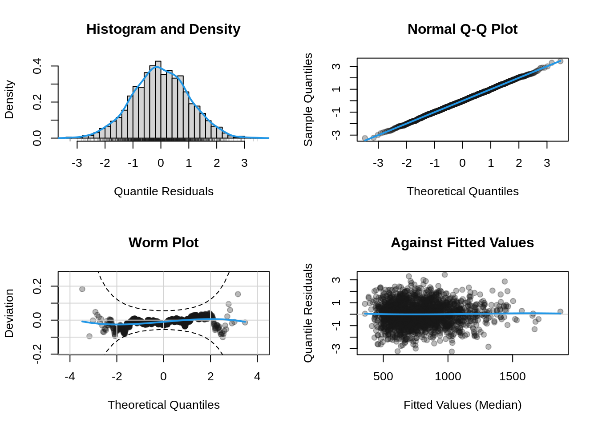
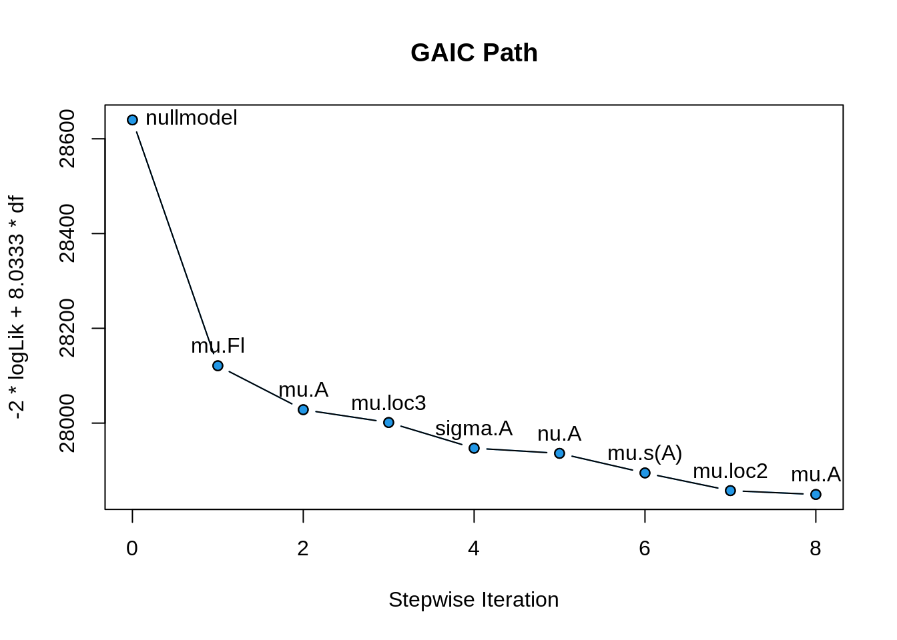

flowchart LR A[responce] --> B(continuous) A --> C[discrete] A --> D[factor] B --> F[real line] B --> G[pos. real line] B --> H[0 to 1] C --> J[infinite count] C --> I[finite count] D --> K[unordered] D --> L[ordered] I --> N[binary] K --> N[binary]
Model Selection
A distribution regression model is defined as
\[\begin{split} y_i & \stackrel{\small{ind}}{\sim }& {D}( \theta_{1i}, \ldots, \theta_{ki}) \nonumber \\ g(\theta_{1i}) &=& b_{10} + s_1({x}_{1i}) + \ldots, s_p({x}_{pi}) \nonumber\\ \ldots &=& \ldots \nonumber\\ g({\theta}_{ki}) &=& b_0 + s_1({x}_{1i}) + \ldots, s_p({x}_{pi}) \end{split} \tag{1}\] where \({D}( )\) is the assumed distribution which depends on parameters \(\theta_{1i}, \ldots, \theta_{ki}\) and where all the parameters can be functions of the explanatory variables \(({x}_{1i}, \ldots, {x}_{pi})\). In reality we do not know the distribution \({D}( )\) and also we do not know which and how the variables \(({x}_{1i}, \ldots, {x}_{pi})\) effect the parameters \(\theta_{1i}, \ldots, \theta_{ki}\). So the model selection in a distributional regression model should;
select the best fitting distribution and,
select the relevant variables for the parameters and how they effect the parameters.
One way to achieve that is the following general algorithm for searching for best model;
step 0: Defining a set of appropriate distributions for the response \({D_J()}\) for \(j=1,\ldots, J,\) see section Section 1.1 how to do that,
step 1: FOR \(J\) in \(j=1,\ldots, J\)
step 2: use distribution \({D_J()}\) to SELECT the appropriate variables \(({x}_{1i}, \ldots, {x}_{pi}).\)
step 3: END the loop
step 4: SELECT the distribution \(\hat{D}_J()\) and variables which give a minimum values for a selection criterion measure.
The selection criterion could be a GAIC defined on the training data a measure defined in the out of bag data. While the above algorithm could work reasonable with data having a relative small number or explanatory variables could be very slow for data with a lot of explanatory variables.
Cutting corners could improve the speed of the algorithm. For example, if the practitioner gives up the smooth additive structure, that gamlss2 provides, and he/she prepare to use only linear terms, a LASSO method can be used at step 2 which will speed up things. Also if the practitioner has confidence on a particular distribution choice, then only the selection step 2 should be performed. The support for a specific distribution can enforced my the preliminary analysis for choosing a distribution described in Section 1.2 and suggested in Stasinopoulos et al. (2024).
1 Select a distribution
1.1 The range of the response
The first thing to take into the account in the selection of the distribution is that the distribution should be defined in the range of the response variable. Figure 1 shows the different possibilities depending on whether the response is continuous, discrete of factor If the response is continuous and has negative values a distribution in the real line is appropriate. For positive responses a positive real line distribution is appropriate. For bounded continuous response we have the options to transform the response to values between 0 and 1 or to create an appropriate truncated distribution. For count response the consideration is whether the counts are finite or not. For infinity counts a distribution similar to the Poisson distribution can be used. For finite counts binomial type distributions can be used. The case in which the response is a categorical variable (factor) is called classification regression. If the factor is an ordered factor appropriate models exist but we will not deal with them here. For unordered factor responses a binomial distribution can be use if the classification is binary otherwise a multinomial distribution. Note that for classification problems, there is a vast literature in machine learning to deal with the problem.
1.2 Preliminary analysis
A preliminary analysis in selecting the distribution can be performed using the chooseDist() function of the package gamlss. Here we used the rent data of the package gamlss.data. We first bring the package and the data set in;
library(gamlss2)
library(gamlss)
da <- rent99[, -c(2,9)]
head(da) rent area yearc location bath kitchen cheating
1 109.9487 26 1918 2 0 0 0
2 243.2820 28 1918 2 0 0 1
3 261.6410 30 1918 1 0 0 1
4 106.4103 30 1918 2 0 0 0
5 133.3846 30 1918 2 0 0 1
6 339.0256 30 1918 2 0 0 1The response variable is is rent and there are two continuous, the area of the flat area and the year of construction yearc and 4 categorical variables, location, bath, kitchen and central heating, cheating.
Here, first we fit a linear model with all explanatory variables to the location parameters \(\mu\) and scale parameter \(\sigma\). Later we use the function chooseDist() to find out which distribution from the ones in positive real line fit, type="realplus", best fit the data, given that \(\mu\) and \(\sigma\) models are fitted linearly with all available variables. Note that, in order to speed up the procedure, we used here a parallel version of chooseDist() using snow with 10 NCPUS (the maximum that our machine can take). Please modify accordantly to your machine capabilities.
m1 <- gamlss2(rent~.|., data=da, family=GA,trace=FALSE)
M1 <- gamlss:::chooseDist(m1, type="realplus", parallel="snow", ncpus=10)minimum GAIC(k= 2 ) family: BCTo
minimum GAIC(k= 3.84 ) family: BCCGo
minimum GAIC(k= 8.03 ) family: BCCGo The function chooseDist() chooses the “best” distribution according to a GAIC criterion. In our case the BCTo distribution was chosen using AIC while the BCCGo using \(\chi^2\) or BIC criteria, respectively.
2 Select appropriate variables
The methodology of “which explanatory variable is needed and for which parameters” depends on the scope of modelling, while special attention has to be taken for non-linear relationships and for interaction. If the scope of the model is to provide good interpretation then the additive smooth structure of gamlss2is adequate because can cope well with non-linearities and relatively well with interactions. Note that interactions in an additive structure have to specified explicitly while in some machine learning algorithms like neural network they come as part of the model. Machine learning algorithms like random forest and neural networks are more difficult to interpreter therefore more suited for prediction purposes. Here we will discuss the the step-wise methodology while boosting is discussed in a different vignette?.
data("rent", package = "gamlss.data")Because the possiblility of linear interactions, we shall scale the two continuous covariates first;
rent$Fl <- scale(rent$Fl)
rent$A <- scale(rent$A)The formula defines the searching scope of the search;
f <- R ~ Fl + A + Fl:A + loc + s(Fl) + s(A) + te(Fl, A) |
Fl + A + loc + Fl:A + s(Fl) + s(A) + te(Fl, A)Here we use the the stepwise algorithm to find the “best” explanatory variables using a Gamma family model;
b <- step_gamlss2(f, data = rent, family = GA, K = 2)Bidirectional Linear Selection
GAIC = 28104.4252 <+> parameter mu, term Fl
GAIC = 27996.2040 <+> parameter mu, term A
GAIC = 27937.8423 <+> parameter sigma, term A
GAIC = 27905.5919 <+> parameter mu, term loc3
GAIC = 27863.1707 <+> parameter mu, term loc2
GAIC = 27860.8491 <+> parameter sigma, term loc3
GAIC = 27856.2102 <+> parameter sigma, term loc2
Bidirectional Selection
GAIC = 27768.8887 <+> parameter mu, term te(Fl,A)
GAIC = 27750.6688 <+> parameter sigma, term s(A)
GAIC = 27748.6682 <-> parameter mu, term Fl
GAIC = 27746.7130 <-> parameter mu, term A
Continue
Final Model
$mu
.. ~1 + loc3 + loc2 + te(Fl, A)
$sigma
.. ~1 + A + loc3 + loc2 + s(A)Note that step_gamlss2() is equivalent to using
b <- gamlss2(f, data = rent, family = GA, optimizer = stepwise, K = 2)The new_formula() function will show the new selected model terms;
new_formula(b)$mu
R ~ loc3 + loc2 + te(Fl, A)
$sigma
~1 + A + loc3 + loc2 + s(A)Here is the summary of the final model;
summary(b)Call:
gamlss2(formula = formula, data = ..1, family = ..2, ... = pairlist(optimizer = stepwise, K = K, strategy = strategy, keeporder = keeporder, cores = cores))
---
Family: GA
Link function: mu = log, sigma = log
*--------
Parameter: mu
---
Coefficients:
Estimate Std. Error t value Pr(>|t|)
(Intercept) 6.44057 0.03170 203.171 < 2e-16 ***
loc3 0.31100 0.03475 8.950 < 2e-16 ***
loc2 0.21511 0.03334 6.452 1.39e-10 ***
---
Smooth terms:
te(Fl,A)
edf 9.51
*--------
Parameter: sigma
---
Coefficients:
Estimate Std. Error t value Pr(>|t|)
(Intercept) -0.86451 0.04454 -19.410 < 2e-16 ***
A -0.14138 0.01388 -10.186 < 2e-16 ***
loc3 -0.19338 0.04989 -3.876 0.00011 ***
loc2 -0.12580 0.04746 -2.651 0.00810 **
---
Signif. codes: 0 '***' 0.001 '**' 0.01 '*' 0.05 '.' 0.1 ' ' 1
---
Smooth terms:
s(A)
edf 4.8959
*--------
n = 1969 df = 21.41 res.df = 1947.59
Deviance = 27703.9013 Null Dev. Red. = 3.17%
AIC = 27746.713 elapsed = 20.88secand here are the smooth fitted plots;
plot(b)
To get the diagnostic plots of the model use;
plot(b, which = "resid")
The selection path can be plotted using;
plot(b, which = "selection")
Now we use a more complex diatributional model using the BCTo family. First we define the formula.
f <- R ~ Fl + A + Fl:A + loc + s(Fl) + s(A) + te(Fl, A) |
Fl + A + loc + Fl:A + s(Fl) + s(A) + te(Fl, A) |
Fl + A + loc + Fl:A + s(Fl) + s(A) + te(Fl, A) |
Fl + A + loc + Fl:A + s(Fl) + s(A) + te(Fl, A)
Note
Note that if modelling of certain parameters is not required the formula 1| could be used.
Next we use the function step_gamlss2() but using different options this time, more specificaly we use;
K=log(3082)so the criterion used will be BIC rather than AIC and therefore less terms will be allowed in the model.strategy = c("forward.linear", "both")so specified explicitly which strategies should be used, see the hlp file for more startegies.
b <- step_gamlss2(f, data = rent, family = BCTo,
K = log(3082), strategy = c("forward.linear", "both"),
keeporder = TRUE)Forward Linear Selection
GAIC = 28121.0230 <+> parameter mu, term Fl
GAIC = 28028.2802 <+> parameter mu, term A
GAIC = 28001.2470 <+> parameter mu, term loc3
GAIC = 27947.0011 <+> parameter sigma, term A
GAIC = 27936.1483 <+> parameter nu, term A
Bidirectional Selection
GAIC = 27894.8174 <+> parameter mu, term s(A)
GAIC = 27857.4438 <+> parameter mu, term loc2
GAIC = 27849.3901 <-> parameter mu, term A
Continue
Final Model
$mu
.. ~1 + Fl + loc3 + loc2 + s(A)
$sigma
.. ~1 + A
$nu
.. ~1 + A
$tau
.. ~1The final model model seems lot simpler than the one obtain using AIC and the GA distribution. Let us looks at its residual diagnostic plots.
plot(b, which = "resid")
The residual plots lok goog. Next we plot the path of selection.
plot(b, which = "selection")
3 Conclusions
Selection in any distributional regression model like gamlss2 requires both the selection of the distribution and also the selection of the expanatory of variables affecting the parameters of the distribution. A general procedure is proposed here but not implemented. Mikis we should do that. We have shown how distibutions and variables can be sellected seperately.
References
Rigby, R. A., and D. M. Stasinopoulos. 2005. “Generalized Additive Models for Location, Scale and Shape.” Journal of the Royal Statistical Society C 54 (3): 507–54. https://doi.org/10.1111/j.1467-9876.2005.00510.x.
Stasinopoulos, M. D., T. Kneib, N. Klein, A. Mayr, and G. Z Heller. 2024. Generalized Additive Models for Location, Scale and Shape: A Distributional Regression Approach, with Applications. Vol. 56. Cambridge University Press. https://doi.org/10.1017/9781009410076.